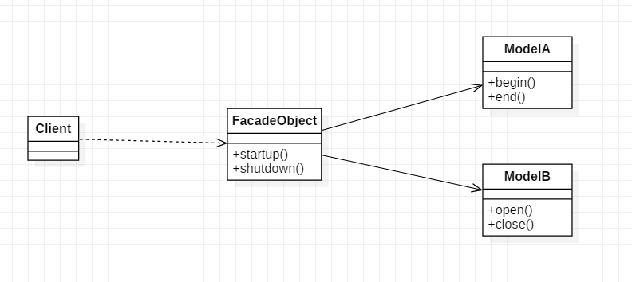

外观模式, 又叫门面模式. 外观模式定义了一个高层的功能，为子系统中的多个模块协同的完成某种功能需求提供简单的对外功能调用方式，使得这一子系统更加容易被外部使用。
外观模式的目的不是给予子系统添加新的功能接口，而是为了让外部减少与子系统内多个模块的交互，松散耦合，从而让外部能够更简单地使用子系统。
外观模式的本质是：封装交互，简化调用
角色
UML类图

代码
public class ModelA {
public void begin(){
System.out.println("开始 model a");
}
public void end(){
System.out.println("结束 model a");
}
}
public class ModelB {
public void open(){
System.out.println("打开 model b");
}
public void close(){
System.out.println("关闭 model b");
}
}
public class FacadeObject {
private ModelA modelA;
private ModelB modelB;
public FacadeObject() {
this.modelA = new ModelA();
this.modelB = new ModelB();
}
public void startup(){
modelB.open();
modelA.begin();
}
public void shutdown(){
modelA.end();
modelB.close();
}
}
// demo:
public static void main(String[] args){
FacadeObject obj = new FacadeObject();
obj.startup();
obj.shutdown();
}
优点
javaWeb开发大量使用门面模式, Controller层, Service层, DAO层各层都是子系统, Service层又是DAO层的门面, Controller又是Service层的门面.
Controller层还应用的中介者模式, Controller作为View, Model的中介者. 详见中介者模式.